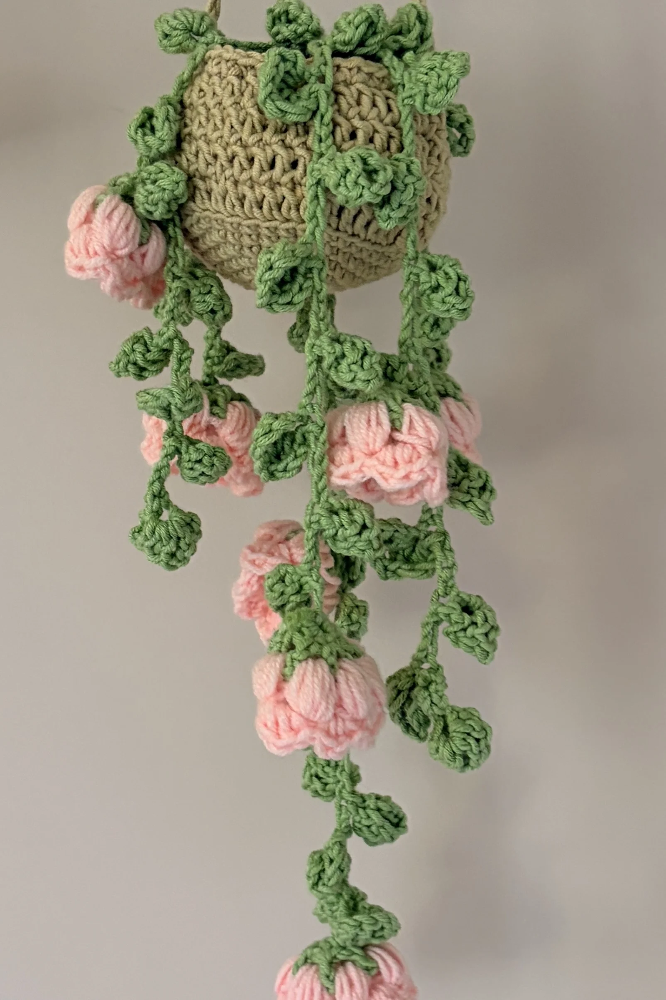

Free Crochet Pattern
Crochet Hanging Planter Pattern (step-by-step)
Want to add a little handmade charm to your room? This crochet lily of the valley hanging planter is such a cute way to decorate your space! With its tiny bell-shaped flowers and hanging green leaves, it’s perfect for brightening up your bedroom, decorating a cosy corner, or adding a handmade touch to your desk or shelf. You can hang it on a wall, near a window, or wherever you want a little floral decoration. It’s also a lovely handmade gift for someone who loves crochet and flowers. Follow the written pattern and video tutorial to make your own!

About the Pattern
This crochet lily of the valley hanging planter is a fun and beginner-friendly project that’s simple to make, even if you’re still getting comfortable with crochet. It takes less than 4 hours to complete, making it a lovely little project for a cosy afternoon of crocheting. The tiny bell-shaped flowers and hanging green leaves make this planter extra cute, and it’s such a fun way to add a handmade touch to your room decor. Hang it on your wall, decorate your desk or shelf, or make one for someone who loves flowers and handmade gifts.
You can follow the written pattern step by step, and if you’d rather watch someone crochet along with you, I’ve also shared a video tutorial on my YouTube channel, Stitchy Days. The video will help you follow the process and see how the little flowers and hanging leaves come together. So grab your yarn and crochet hook, and let’s make this adorable hanging planter together!
Video Tutorial
Prefer watching a video while you crochet? I’ve got you covered! You can watch the full step-by-step tutorial on my YouTube channel, Stitchy Days, where I’ll guide you through making your own lily of the valley hanging planter. Follow along to see how the tiny bell-shaped flowers and hanging leaves come together to create this cute little room decor piece.
Tip: If this is your first time making crochet flowers, watch the flower and assembly sections of the video before you start. It’ll help you understand how the individual pieces fit together.
Materials
- Green yarn for the vines and hanging strap
- Brown yarn for the soil
- Beige yarn for the pot
- White or pink yarn for the flowers
- 4 mm crochet hook
- Stitch marker or bobby pin
- Scissors
- Yarn needle
- Stuffing
Want to shop the materials?
Check out the materials here →Abbreviations
Written Pattern
How to Make the Hanging Planter
Your Lily of the Valley Hanging Planter has five parts: a pot, a soil circle, three leafy vines, six flowers, and a hanging strap. Crochet each piece separately, then bring them together in the final assembly.
1. Crochet the Pot
Make 1 using beige yarn. First crochet a flat circular base, then build up the sides.
Pot Base
R1: MR, 6 sc. Pull tight to close. (6 sc)
R2: Inc in each st around. (12 sc)
R3: (1 sc, 1 inc) around.
R4: (2 sc, 1 inc) around.
R5: (3 sc, 1 inc) around.
R6: (4 sc, 1 inc) around.
R7: (5 sc, 1 inc) around. Sl st.
You now have the circular base of your planter.
Pot Sides
Work upwards from the base to create the sides.
R8: Ch 2. 1 dc in each st around in BLO, sl st.
R9–R11: Ch 2. 1 dc in each st around through both loops, sl st.
Working into the back loops only in Round 8 creates a ridge that helps the pot sides turn upwards. Repeat the instructions for Rounds 9–11 to build the height. At the end of Round 11, sl st and ch 1. Your beige pot is ready.
Tips for the Pot
- Use a stitch marker to track the beginning of each round.
- Work into the back loop only throughout Round 8.
- Keep your tension consistent so the pot holds its shape.
- If the pot looks flat, gently shape the sides with your fingers.
2. Crochet the Soil
Make 1 using brown yarn. The soil circle sits inside the pot and provides a place to attach the vines.
Use the same circular pattern as the pot base.
R1: MR, 6 sc. Pull tight to close.
R2: Inc in each st around. (12 sc)
R3: (1 sc, 1 inc) around.
R4: (2 sc, 1 inc) around.
R5: (3 sc, 1 inc) around.
R6: (4 sc, 1 inc) around.
R7: (5 sc, 1 inc) around. Sl st.
Fasten off, leaving a yarn tail if you plan to sew the soil into the pot.
Tips for the Soil
- Check that the circle fits neatly inside your pot.
- If it is too large or small, check your tension and hook size.
- Keep the circle relatively flat so the vines can be attached securely.
Set the soil aside for assembly.
3. Make the Hanging Strap
Using beige yarn, attach the yarn to one side of the pot.
Pattern: Ch 40, sl st to the opposite side, ch 1 and fasten off.
Check that the strap isn’t twisted and both ends are securely attached. Set the pot aside while you make the remaining pieces.
4. Crochet the Vines and Leaves
Make 3 vines.
The green vines are made using a repeating leaf pattern with chains between the leaves. These hanging strands give the planter its lovely trailing look.
Leaf Pattern
Start with ch 4.
In the 3rd ch from hook, work: 2 dc, ch 2, 2 dc, ch 2, sl st. Then sl st into the next ch.
This creates one small leaf.
Tip: Keep your stitches consistent so the leaves have a similar shape. Don’t worry if the first few look a little different while you’re getting used to the pattern.
Making the Vine
Start by chaining 7 for spacing. Then repeat the leaf pattern. Continue making chains and leaves until you reach your desired length, approximately 15 leaves per vine. Fasten off.
Repeat these steps until you have three vines.
Tips for the Vines
- Keep the chain spacing consistent between leaves.
- Count your leaves as you work so all three vines have a similar fullness.
- You can gently arrange the vines before attaching them to see how they’ll hang.
- If you’re unsure about the leaf placement, refer to the video tutorial to see how the repeating pattern works.
Once all three vines are complete, set them aside for assembly.
5. Crochet the Lily of the Valley Flowers
Make 6 flowers.
Each little flower is made up of a sepal base and a petal section. You’ll crochet the base first, then add the flower colour to create the tiny bell-shaped blooms.
Part A: Sepals
Using the green yarn, begin with a magic ring.
R1: MR, 6 sc. Pull tight and sl st.
This creates the small base for your flower.
R2: Ch 2, 1 dc in same st. (Ch 1, 1 dc in next st) around. Sl st and fasten off.
Once you’ve completed the round, secure the yarn and prepare to attach your flower colour.
Tip: Keep the centre of the sepal neat, as this is where the flower will be built.
Part B: Petals
Attach your chosen flower yarn to any ch-1 space and ch 2.
In the same space, work a 5-loop bubble stitch, then ch 1. Repeat in all 6 spaces. Finish with a slip stitch.
The bubble stitches create the rounded, bell-like shape of the Lily of the Valley flowers.
Tip: If you’re new to bubble stitches, watch the video tutorial to see how the loops are formed and worked together.
Part C: Flower Edging
Ch 1. In each space, work: 1 sc, 2 dc, 1 sc. Repeat around, then sl st and fasten off.
This creates the edging around each little flower. Repeat the steps until you have six flowers.
Tips for the Flowers
- Keep the flower colour consistent if you want a matching set.
- Gently shape each flower with your fingers after finishing.
- Make sure the yarn ends are secured before attaching the flowers to the vines.
- Set all six flowers aside until you’re ready to assemble the planter.
6. Final Assembly
You’ve finished all the individual pieces. Now let’s put everything together.
Step 1: Attach the Soil
Place the brown soil circle inside the beige pot, positioning it evenly in the opening. Sew it securely in place with a yarn needle, or join the pieces with single crochet through both layers. If you’d like a fuller look, add a small amount of stuffing underneath the soil before securing it. Avoid overstuffing.
Step 2: Attach the Vines
Take your three green vines and arrange them over the centre of the brown soil section. Sew all three vines to the centre of the soil section using a yarn needle.
Before securing them completely, check how the vines fall over the sides of the planter.
Tip: Spread the vines out a little so they don’t all hang in exactly the same direction. This helps create a fuller-looking arrangement.
Step 3: Attach the Flowers
Take your six finished flowers and arrange them along the vines. Sew the flowers to the vines in your preferred arrangement. You can spread the flowers out along the hanging strands or place them wherever you think they look best.
Tip: Try arranging the flowers before sewing them in place. This lets you experiment with their positions and find a layout you like.
Once all six flowers are attached, gently arrange the vines and leaves so they hang naturally.
Step 4: Check the Strap
Make sure the beige strap is securely attached on both sides, isn’t twisted, and can support the planter when hung.
Step 5: Final Adjustments
Give your planter a final check.
- Make sure the hanging strap is secure.
- Check that the soil section sits neatly inside the pot.
- Arrange the three vines so they hang nicely.
- Adjust the flowers so they’re distributed along the vines.
- Tuck away any visible yarn ends.
And that’s it! Your Lily of the Valley Hanging Planter is ready.
Your Hanging Planter Is Ready!
You’ve made your very own Lily of the Valley Hanging Planter! Hang it in your bedroom, decorate your desk or shelf, or add it to a cosy corner that needs a little handmade decoration. You can also make one as a thoughtful gift for a friend who loves crochet and flowers.
I hope you enjoyed making this project as much as I enjoyed sharing it with you. If you make one using this pattern, I’d love to see how yours turns out!
A Little Note from Stitchy Days ♡
Hi there
Thank you so much for trying one of my crochet patterns! I’m so happy to have you here, and I hope you enjoy making this project as much as I enjoyed creating it.
If you make something using this pattern, I’d love to see it! Feel free to tag Stitchy Days when you share your finished project. Seeing your creations means so much to me as I continue growing this little crochet corner.
Thank you for supporting my work and happy crocheting! ♡

Crochet Lily of the Valley Hanging Planter: FAQs
My basket is looking flat like a circle instead of shaping up into a 3D pot. What am I doing wrong?
A: This usually happens during the transition from the flat circle base to the body of the pot. Make sure you are switching to working in the back loop only (BLO) when starting the double crochet round (Round 8). That back-loop ridge creates the sharp edge needed for the base of the basket to fold upward and form vertical walls.
I'm struggling to close my magic ring tightly because I'm using a stiff cotton yarn. Is there an alternative?
A: Yes! If your yarn is too rigid to close a magic circle smoothly, try this work-around: Make a slipknot, chain 4, and slip stitch into the very first chain to form a small ring. Then, work your 6 single crochets directly into the center of that chain ring just like a magic circle, and continue with the pattern.
How do I attach the soil pad securely inside the planter?
A: Crochet a separate soil circle following the same base increases (Rounds 1–6) and fasten off. Place it inside your completed plant pot, and use the matching pot yarn color to single crochet all the way around the rim, joining the soil disk to the inner wall of the pot. Tip: Stuff the pot lightly with polyfill stuffing just before closing it completely so it keeps a plump, realistic shape!